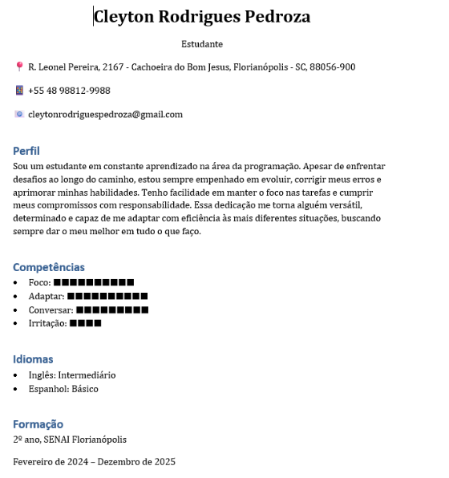

Portfólio escolar · SESI SENAI
Cleyton RodriguesPedroza
Estudante de Desenvolvimento de Sistemas
Este espaço reúne o que produzi ao longo do curso: atividades por área de conhecimento, projetos técnicos, currículo e os objetivos que guiam minha formação.

Cleyton Rodrigues Pedroza 11/10/2008
01 — Apresentação
Quem sou eu?
Sou uma pessoa que não gosta de deixar as coisas para depois. Mesmo quando tenho tempo de sobra, prefiro realizar logo as tarefas para me livrar delas. Ao mesmo tempo, acabo procrastinando. Quando isso acontece, lembro que sempre existe alguém que não perdeu para a procrastinação, e isso me faz continuar para não ficar para trás. É como se houvesse uma competição na minha cabeça; gosto da sensação de já ter concluído algo enquanto outros ainda estão fazendo. Também sou um pouco ciumento: quando percebo que estou ficando atrás de alguém em algum aspecto, me esforço ainda mais para tentar passar, mas sempre tentando ser respeitoso.
02 — Trajetória
Currículo

03 — Memorial
Meu memorial
Espero que, com a minha capacidade de resolver problemas, assumir responsabilidades e fazer o que precisa ser feito sem reclamar, eu consiga me tornar um profissional de sucesso no futuro. Acredito que disciplina e foco podem me ajudar a construir uma carreira sólida e alcançar tudo o que planejo.

04 — Metas
Objetivos
Tenho como objetivo atingir várias metas ao longo da minha vida. A cada fase que passa, novos objetivos surgem, trazendo ainda mais coisas para buscar. Não costumo ter um único objetivo fixo o tempo todo; estou sempre criando novas metas conforme vou evoluindo e entendendo melhor o que quero para o meu futuro.
05 — Fora da escola
Interesses
Gosto de jogar Clash Royale e de passar meu tempo vendo TikTok. Tenho bastante disciplina para ir à academia, tanto que raramente falto. Também gosto de sair para festas; não que eu vá sempre, mas quando vou aproveito bastante.